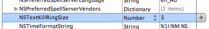

Please note: this article is part of the older "Objective-C era" on Cocoa with Love. I don't keep these articles up-to-date; please be wary of broken code or potentially out-of-date information. Read "A new era for Cocoa with Love" for more.
Multiple copy buffers, cursor and tab key tricks in Xcode
This week, I'll show you a few keyboard related tricks for editing in Xcode, including setting up multiple copy-and-paste buffers by adjusting the key mappings, switching tabs on or off for autocomplete and other text editing quirks in Xcode like understanding why the "End" key doesn't move to the end of the line on the Mac.
Key bindings, the cursor and Emacs
Standard text editing on the Mac obeys many more keyboard commands than most casual users realize. This is because the key bindings on the Mac derive from NeXTStep which chose to implement (where possible) a large number of the Emacs key bindings.
First developed in the 1970's, Emacs was designed for keyboards that lacked cursor and forward delete keys and computers that lacked a mouse. And, like its spiritual enemy in the world of text editing, Vi, Emacs was never a program to update its key bindings to stay current.
What this means is that text editing applications that use the standard Cocoa text editor — like TextEdit.app — and other more sophisticated text editors that support the operating system's default key bindings — like Xcode — support most of the Emacs key controls for navigating and editing — like Ctrl-F and Ctrl-B for forward and backward by one character or Ctrl-A and Ctrl-E for jump to the start or end of the paragraph.
Of course, most of this is pointless to ordinary users since the standard cursor and home keys will do this in a far less cryptic way.
For those of you who still scream at Xcode when the Home key doesn't move to the start of the line or get annoyed that the cursor doesn't move when using PageUp/PageDown, here's a quick refresher:
| Key or combination | Action |
| ↑ | cursor up |
| ↓ | cursor down |
| ← | cursor left |
| → | cursor right |
| Command ← | cursor to start of line |
| Command → | cursor to end of line |
| Option ← | cursor to start of previous word |
| Option → | cursor to end of previous word |
| Control ← | cursor to start of previous camel-case component (Xcode only — otherwise it works like Command ←) |
| Control → | cursor to end of previous camel-case component (Xcode only — otherwise it works like Command →) |
| PageUp or Control ↑ | scroll up one page, without moving the cursor |
| PageDown or Control ↓ | scroll down one page, without moving the cursor |
| Home | scroll to top of document, without moving the cursor |
| End | scroll to end of document, without moving the cursor |
| Option-PageUp | scroll up one page, moving cursor to center of new location |
| Option-PageDown | scroll down one page, moving cursor to center of new location |
| Command ↑ | move cursor to start of document |
| Command ↓ | move cursor to end of document |
| Option ↑ | move cursor to start of the paragraph (except in Xcode where it does nothing) |
| Option ↓ | move cursor to end of the paragraph (except in Xcode where it does nothing) |
Due to the importance of the Home/End/PageUp/PageDown keys in text editing, I have no respect for Apple's choice to start shipping keyboards without these keys by default on new computers.
I wish there was a little more sense to these bindings. There almost are a few rules — like Control, Option and Command represent small, medium and largest increments in any direction and combinations involving the cursor keys move the cursor but Home/End/PageUp/PageDown combinations just scroll without moving the cursor — but sadly there are enough violations of these rules that you must simple learn them all by rote.
The ability to scroll the document without moving the cursor when desired on the Mac is an ability that I sorely miss when I'm stuck using Visual Studio or other development environments — in these other environment, my cursor always gets stranded when I quickly glance at another point in the document, whereas on the Mac I can just tap a left or right arrow to return to where I was.
Kill and yank
A side effect of bringing Emacs key bindings into Xcode though is that a few Emacs commands that don't have common Macintosh equivalents are brought in as well.
This includes kill and yank. Kill and yank are Ctrl-K and Ctrl-Y by default.
In most respects, kill and yank work like cut and paste. Kill something and it gets stored in your kill buffer, yank and the contents of your kill buffer are inserted at the current insertion point. If you have no selection, kill will delete from the cursor to the end of the line, otherwise it will only delete the selection. There are a few differences compared to cut-and-paste: you can't yank between applications (each application has its own, non-shared kill ring) and they store pure text only (no styled text, images or other copyable data).
In their default setup, kill and yank are like a second-rate extra cut-and-paste option. But correctly configured, you can have as many separate cut buffers as you want.
Setting up kill-and-yank
The first configuration change you need to make is to set up a binding for yankAndSelect: instead of ordinary yank:. We do this because yank: will only ever insert the most recently killed text whereas yankAndSelect: allows you to cycle through all stored buffers. You can do this in the "Xcode Preferences→Key Bindings→Text Key Bindings" but I prefer to make the binding System-wide by using the "/Developer/Applications/Utilities/Property List Editor.app" to create a file at "~/Library/KeyBindings/DefaultKeyBinding.dict" that overrides the yank: command with a yankAndSelect: command.
The key string is actually caret-y, not Ctrl-Y. You may need to create the KeyBindings
directory in your Library directory as it is not there by default.
Update 2016/03/29: The "Property List Editor.app" is long gone. Xcode will still edit "Property List - Text" format files but Xcode wants them to have the ".plist" extension, rather than the ".dict" extension required for the "DefaultKeyBinding.dict" file. It's probably just easier to create a plain text file at the "DefaultKeyBinding.dict" path with the contents:
{
"^y" = "yankAndSelect:";
}
Both yank: and yankAndSelect: are standard commands on NSReponder, so this just exchanges one for another. In a totally bizarre twist of documentation, yankAndSelect: is an undocumented method (it's not in the Cocoa.h headers) that appears in the documentation where you are encouraged to used it as required.
The other step to make multiple kill buffers work is to specify how many buffers you want. By default, there is 1 but we want multiple buffers.
To do this, just add the key NSTextKillRingSize with a string or number value greater than 1 to any .plist file. For example, if you only want this behavior added to Xcode, add the line to the Xcode .plist file.
I like to add this like to my Global Preferences. To do this, type:
open ~/Library/Preferences/.GlobalPreferences.plist
in a Terminal window (the file is hidden by default in the Finder so you need to open it like this unless you've turned the display of hidden files on).
The NSTextKillRingSize setting in my .GlobalPreferences.plist file.
With these changes, you can use Control-K to copy something to a kill buffer and then Control-Y to cycle through the last 3 items stored in your kill buffers (the collection of kill buffers is called the "kill ring"). You can use any number or kill buffers but large numbers may make cycling through the complete set harder (since you can only cycle through in one direction).
The Tab key binding in Xcode
While I'm talking about key bindings, one of the biggest shocks in Xcode 3.2 for me was the fact that the Tab key is configured by default to select the next Code Sense Completion, instead of inserting a Tab character.
This meant that if I had code like this:
and I hit the Tab key to indent the second line, it wouldn't indent — instead the autocomplete field would be selected.
I found this particularly frustrating since I normally use Ctrl-/ to select autocomplete fields, making the Tab key redundant as well as interfering.
Fortunately, Xcode supports a "Insert Tab without Extra Action" that is normally bound to Option-Tab which will only ever insert a Tab character (will never perform other UI actions). By exchanging the key bindings between "Insert Tab" and "Insert Tab without Extra Action", my complaint was solved.
On the topic of search and replace: a change to menus in Xcode 3.2 means that single file Search and Replace no longer appears in the menu (unless you're holding down the Control key, since its binding is now Ctrl-Command-F and "Ctrl" variants of menu items aren't shown unless "Ctrl" is held). This can make search and replace hard to find in Xcode 3.2. Another feature that has become harder to find are the search options — the little magnifying glass on the search field hides a popup menu that contains the essential options like "Ignore case".
A sideeffect of changing the tab bindings is that all text fields in the user interface — including the Search and Replace text fields — will change their behavior when the Tab key is pressed. Once the bindings are changed, Tab will no longer move the input focus from the search field to the replace field — it will instead insert the tab character into the selected field. This means that to jump from the Search field to the Replace field you will need to type Option-Tab. Of course, the ability to easily enter tab characters in the search field has its advantages too.
Conclusion
Text editing on the Mac is loaded with features that most people never use. While there's often no need to use many of the extra features, extra navigation options or extra kill-and-yank buffers can be useful additions.
The .GlobalPreferences.plist and global DefaultKeyBinding.dict files used to alter global key mappings provide a surprising amount of flexibility to applications that respect their content, like Xcode. You can use them to remap most key combinations to other commands if you choose. A corollary though: you should try to respect these dictionaries if writing your own custom text editor.
The design of an iPhone application
A sample Mac application with complete unit tests